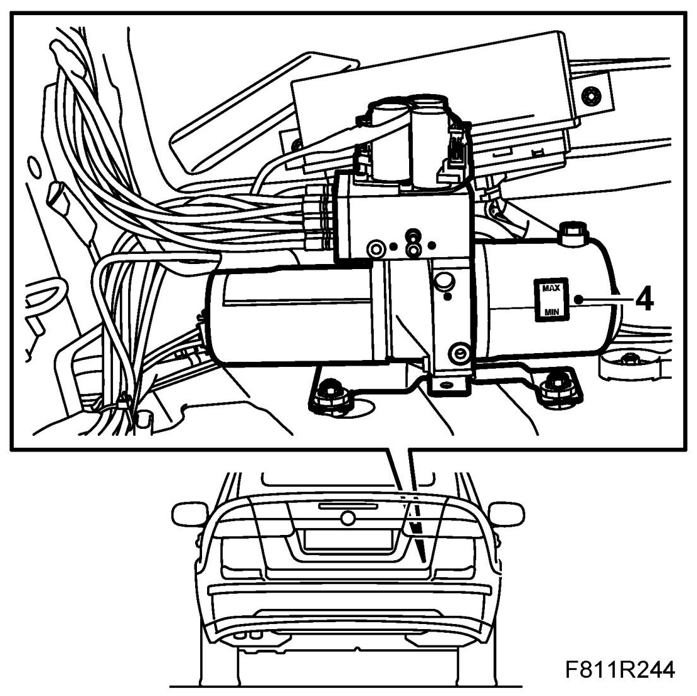

Checking/Filling Oil
Checking/Filling Oil
Checking oil level
1. The fluid capacity in the entire system is 0.6 l. The volume between MAX and MIN is 65 ml. Use 89 96 860 Power steering fluid.
IMPORTANT: Never use the same fluid as in the Saab 900 Cabriolet -M94
2. Raise the soft top fully.
3. Remove Luggage compartment side trim, CV on the right hand side.
4. Check the fluid level in the reservoir.
The oil level must be between the MAX and MIN marks.

5. Fit Luggage compartment side trim, CV.
Filling oil
1. The fluid capacity of the entire system is 0.5 l. The volume between MAX and MIN is 65 ml. Use 89 96 860 Power steering fluid.
IMPORTANT: Never use the same fluid as in the Saab 900 Cabriolet -M94
2. Raise the soft top fully.
3. Remove Luggage compartment side trim, CV on the right hand side.
4. Remove the fluid filler plug from the reservoir.
5. Fill with fluid to the MAX mark on the reservoir using a suitable funnel.
6. Fit the fluid filler plug to the reservoir.
7. Fit Luggage compartment side trim, CV.